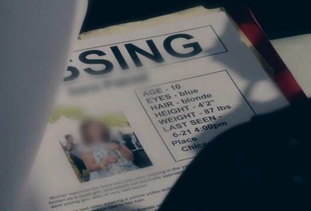

Find the name here
Halaman ini berfungsi sebagai platform informasi untuk membantu menemukan orang-orang yang dilaporkan hilang.
Tsunami datang tanpa peringatan, tapi kita bisa bersiap! Kenali tanda-tanda, lindugi diri dan ornag tercinta
Bagikan pengetahuanmu tentang tsunami. Satu informasi kecil, menyelamatkan banyak nyawa
Langkah-langkah persiapan dan perencanaan untuk menghadapi potensi bencana secara efektif.
Tindakan dan langkah darurat yang dilakukan untuk menyelamatkan diri saat bencana terjadi.
Langkah pemulihan dan penanganan dampak bencana untuk mendukung komunitas yang terdampak.
Berita-berita mengenai bencana tsunami yang terjadi di Indobesia
Tsunami Aceh terjadi pada hari Minggu, 26 Desember 2004 silam dengan guncangan gempa sebesar 9,1 hingga 9,3 SR
Gempa bermagnitudo 7,4 SR mengguncang kota Palu dan Donggala dengan pusat gempa 10 km yang menyebabkan tsunami setinggi 6 meter dengan kecepatan 800 km/jam juga disertai likuifasi
Gelombang tsunami di Selat Sunda terjadi pada hari Sabtu, 22 Desember 2018 malam hingga Minggu pagi menewaskan sedikitnya 437 orang
Gempa bumi yang terjadi pada 25 Oktober 2010 memiliki kekuatan sekitar 7,2 SR. Gempa ini terjadi di dasar laut sejauh 10 km sehingga menyebabkan tsunami dengan ketinggian 3 meter yang merusak lingkungan sekitar lokasi
Bencana tsunami diketahui pernah menghantam Pulau Flores bagian tengah dan timur pada 29 tahun lalu tepatnya 12 Desember 1992. Saat itu lebih dari 1.500 orang dinyatakan meninggal, 500 orang hilang, dan ribuan bangunan rusak. Kala itu gelombnag setinggi 6 hingga 25 menet menyapu wilayah daratan sejauh 300 meter setelah gempa berkekuatan 7,5 SR mengguncang wilayah yang masuk dalam Provinsi Nusa Tenggara Timur. Pusat gempa terdeteksi terletak di kedalaman 36 km di Laut Sawu di lepas Pantai Maumere. Rumah penduduk, tempat ibadah, gedung-gedung sekolah, rumah sakit, dan beragam fasilitas umum lainnya porak-poranda akibat guncangan gempa dan tsunami. Dua kabupaten yang peling terdampak dari kejadian ini adalah Kabupaten Sikka dan Kabupaten Ende.
Pada tanggal 17 Juli 2006, tragedi besar melanda Pantai Pangandaran, Jawa Barat. Terjadinya tsunami dahsyat diakibatkan oleh gempa bumi dengan kekuatan 7,8 SR mengguncang wilayah ini dan meninggalkan luka mendalam bagi masyarakat. Gempa ini memicu gelombang tsunami setinggi 5 hingga 7 meter yang menghantam pesisir Pangandaran dan sekitarnya. Korban jiwa akibat tsunami ini mencapai lebih dari 6000 orang, sementara ribuan lainnya mengalami luka-luka dan kehilangan tempat tinggal. Tragedi ini juga merusak infrastruktur dan menyebabkan kerugian materi yang tidak sedikit. Setiap tahun, peringatan tragedi ini menjadi momen penting.
Halaman ini berfungsi sebagai platform informasi untuk membantu menemukan orang-orang yang dilaporkan hilang.